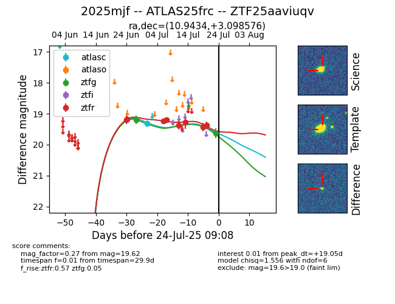

Target ZTF25aaviuqv at 2025-07-24 09:08, see:
FINK: fink-portal.org/ZTF25aaviuqv
Lasair: lasair-ztf.lsst.ac.uk/objects/ZTF25aaviuqv
ALeRCE: alerce.online/object/ZTF25aaviuqv
TNS: wis-tns.org/object/2025mjf
YSE: ziggy.ucolick.org/yse/transient_detail/2025mjf
alt names
ZTF25aaviuqv (ztf,fink)
2025mjf (tns,yse)
ATLAS25frc (atlas)
coordinates:
equatorial (ra, dec) = (10.9434,+3.09858)
galactic (l, b) = (119.1357,-59.71667)
photometry
last atlasc=19.30, ztfg=19.62, ztfr=19.36
1 atlasc, 2 ztfg, 8 ztfr detections
